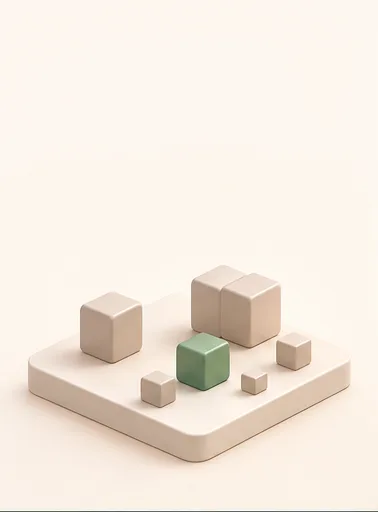
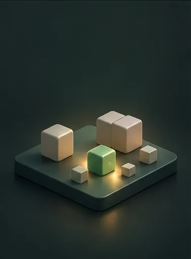
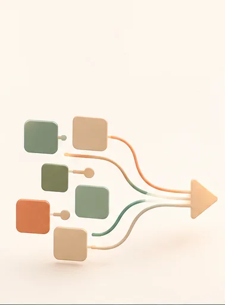

Patch
Describe a change as a first-class piece of project history.
Version control, patch by patch
Small, deliberate changes — sealed into history anyone can verify.
Early implementation. Good for review, experimentation, and contribution. Not yet a place to keep history you cannot lose.
$ prikk --help
Get started
curl -fsSL https://github.com/prikk-vcs/prikk/releases/latest/download/install.sh | sh
cargo install prikk
Linux, macOS, and Windows. The install guide covers pinning a version, verifying checksums, and building from source.
A calmer way to work
Committing does not publish. A patch is queued and signed first, and only sealing makes it history.
A quiet chain: patches arrive, and the project grows.
The idea
Describe a change as a first-class piece of project history.
Keep the path from change to result explicit and inspectable.
Integrate useful changes without making the project harder to reason about.
Patch by patch
Start


A new project begins.
Patches

Small, focused patches flow in.
Integrate
Prikk integrates and validates with confidence.
Grow
The project grows, alive and spreading.
What you get
Trust built in.
Proven-confluent, or refused with a reason.
See a change before you take it.
Try it
$ prikk commit --from-worktree -m "genesis"
recorded worktree patch in active WAL
baseline ref: heads/main
patch id: c29910f552275f805d9b8efd513a4c47995249393ccc...
WAL sequence: 1
operations: 1
referenced blobs: 1
text edits: 0
create-file hello.txt
note: multi-operation text diff minimization, patch algebra, rename detection, and audit plugins remain later increments
note: the message is validated but not stored -- it will not appear in `prikk log`; persisting it is a later incrementReal output, not a mockup.